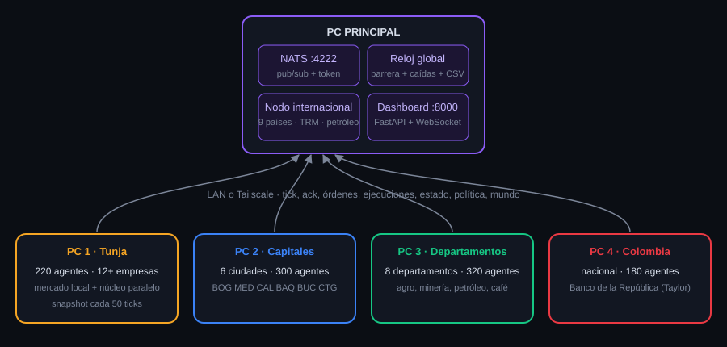
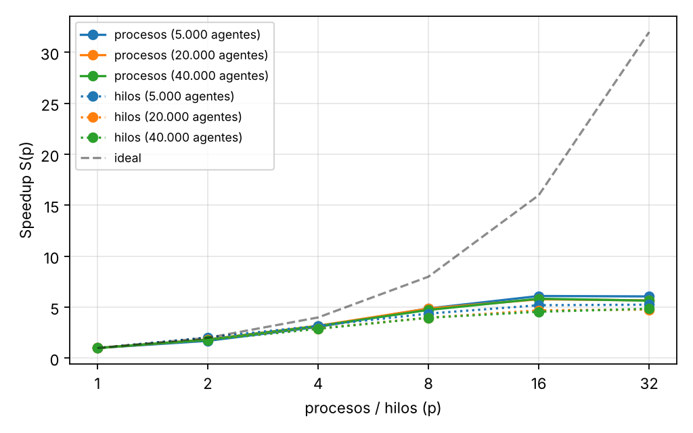
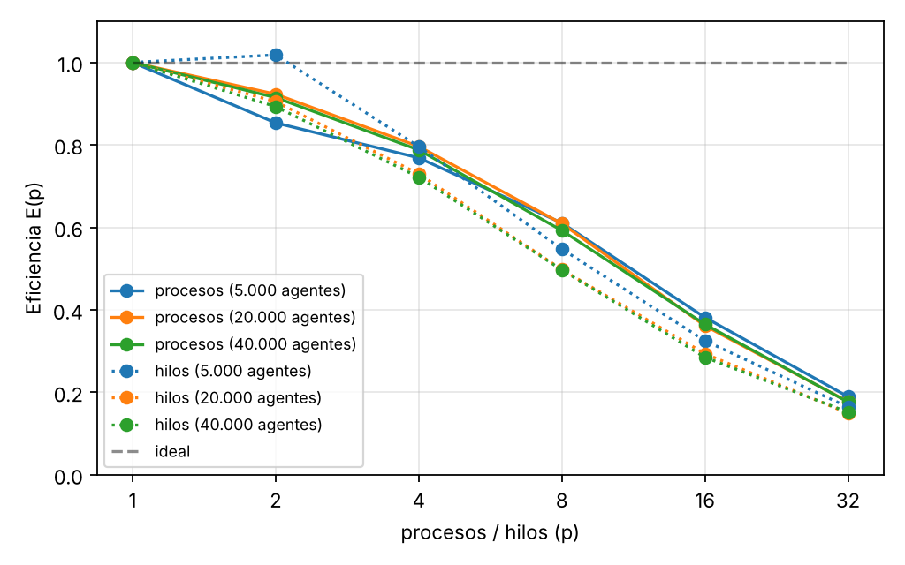

Resumen—Este avance presenta Bolsa Distribuida, una simulación de un mercado bursátil con 1.300 agentes (hogares, empresarios, inversionistas, bancos y formadores de liquidez) calibrada con datos oficiales y públicos del Banco Mundial, el Banco de la República y el DANE. La economía se reparte en cinco nodos (Tunja, ciudades capitales, departamentos, nivel nacional y mercado internacional) que pueden correr en computadores distintos y se comunican mediante mensajería publicar/suscribir sobre NATS, con un reloj global y una barrera de sincronización. Dentro de cada nodo, la decisión de inversión, que evalúa riesgo por Monte Carlo, se paraleliza en Python con multiprocessing y con threading mediante descomposición de dominio con generadores aleatorios por bloque, de modo que el resultado es idéntico con cualquier número de trabajadores. En un equipo de 4 núcleos sin otra carga, con 40.000 agentes y 4 procesos el speedup es de 3,76 (eficiencia 0,94); en un portátil de 16 núcleos alcanza un máximo de 6,1, limitado por la memoria, la frecuencia y la carga del equipo. El proyecto integra computación paralela y distribuida, redes, minería de datos y analítica, y se alinea con los ODS 8, 9 y 10.
Términos índice—computación paralela, sistemas distribuidos, simulación basada en agentes, speedup, multiprocessing, NATS, minería de datos, ODS.
Los mercados financieros son sistemas complejos: el precio de una acción en Bogotá depende de lo que hacen miles de hogares, empresas e inversionistas, de la tasa del Banco de la República y de lo que ocurre con el petróleo o la tasa de cambio en el exterior. Los modelos basados en agentes permiten estudiar esa interacción «de abajo hacia arriba», simulando las decisiones individuales y observando los fenómenos agregados que emergen [1], [2]. Su costo es computacional: cada agente debe decidir en cada paso de tiempo, y si la decisión incluye una evaluación de riesgo por Monte Carlo, el trabajo crece con el número de agentes, de activos y de escenarios.
Bolsa Distribuida aborda ese costo en dos niveles. En el nivel distribuido, la economía se divide geográficamente en cinco nodos que pueden ejecutarse en cinco computadores y que intercambian órdenes de compra y venta por la red. En el nivel paralelo, dentro de cada nodo, la decisión de inversión se reparte entre varios procesos o hilos del mismo equipo. Además, las corridas generan series de tiempo que se analizan con técnicas de analítica y minería de datos, y se visualizan en un tablero web en tiempo real.
Este documento corresponde al avance del Proyecto Integrador. La Sección II plantea el problema y su relación con los Objetivos de Desarrollo Sostenible (ODS); la Sección III describe la estructura general del sistema; la Sección IV presenta el módulo paralelo y su reporte inicial de rendimiento; la Sección V explica la integración con las asignaturas de cuarto semestre, y la Sección VI resume cómo reproducir los resultados.
En Colombia, entender cómo se transmiten los choques económicos entre territorios (por ejemplo, cómo una subida de tasas o una caída del petróleo afecta de forma distinta a Tunja, a las grandes capitales y a los departamentos) suele requerir modelos agregados que no muestran el comportamiento de los agentes ni permiten experimentar. Una simulación basada en agentes que sea útil para ese propósito debe cumplir tres condiciones a la vez: (i) partir de datos reales y verificables, (ii) tener suficientes agentes y activos para que emerjan dinámicas de mercado, y (iii) ejecutarse en un tiempo razonable con el hardware disponible en una universidad, que normalmente son varios computadores personales y no un clúster.
Pregunta de investigación: ¿cómo diseñar una simulación de mercado multiagente, calibrada con datos oficiales, que distribuya la economía entre varios computadores y acelere la decisión de los agentes con paralelismo en Python, sin que la paralelización altere los resultados?
General: diseñar e implementar una plataforma paralela y distribuida de simulación económica para observar, medir y analizar mercados regionales, nacionales e internacionales.
Específicos:
La Agenda 2030 [6] orienta el proyecto en tres ODS:
El proyecto no pretende pronosticar la economía; es una herramienta experimental y educativa para razonar sobre estos fenómenos con datos reales.
La Tabla I resume los cinco nodos. Los datos de partida son públicos y gratuitos: indicadores del Banco Mundial para diez países (inflación, crecimiento, desempleo, tasas, tipo de cambio, recaudo y PIB per cápita) [9], 730 días de la Tasa Representativa del Mercado publicada en datos.gov.co [10], la población del Censo 2018 del DANE [11] y el salario mínimo. Un script descarga los datos crudos y otro los procesa en config/semilla.json.
| Nodo | Qué simula | Agentes |
|---|---|---|
| tunja | Economía de Tunja y sus sectores | 220 |
| capitales | Bogotá, Medellín, Cali, Barranquilla, Bucaramanga y Cartagena | 300 |
| departamentos | Ocho departamentos, entre ellos Boyacá | 320 |
| colombia | Grandes empresas y Banco de la República (regla de Taylor [13]) | 180 |
| internacional | Nueve países con reglas propias, petróleo, TRM; reloj global y tablero | 280 |
La Fig. 1 muestra la arquitectura. Un servidor NATS [8] en el computador principal transporta mensajes JSON por asuntos de publicación y suscripción (puerto TCP 4222, autenticación por token). El coordinador emite cada tick (un día hábil) y espera la confirmación de todos los nodos vivos, con un tiempo límite: es una barrera de sincronización. Un nodo que no responde durante tres ticks se marca como caído y el resto continúa; al volver, recupera su último snapshot y se reincorpora. Si los equipos no comparten red local, la misma configuración funciona sobre una VPN en malla (Tailscale).

En cada tick cada nodo: (1) recibe el estado del mundo (TRM, petróleo, tasas) y la política monetaria; (2) liquida las ejecuciones que le llegaron de otros nodos; (3) procesa su economía (salarios, impuestos, consumo, crédito, quiebras, contratación, emprendimiento, inflación); (4) corre su mercado, una subasta doble continua con un formador de liquidez, en la que los inversionistas deciden con el núcleo paralelo; (5) envía las órdenes sobre activos de otros nodos, y (6) publica su estado y confirma el tick. Las órdenes remotas reservan efectivo con conversión por TRM, se validan con las reglas del país destino (por ejemplo, topes de propiedad extranjera) y la liquidación regresa al nodo de origen.
El sistema está escrito en Python. sim/ contiene el modelo económico, el mercado, el núcleo paralelo, el servicio de nodo y el coordinador; dashboard/ un servidor FastAPI con WebSocket y vistas web con mapas (D3) y velas japonesas; analitica/ el benchmark, el reporte de validación y la minería de datos; despliegue/ archivos de Docker Compose para el computador principal y los nodos.
El paso más costoso de cada tick es la decisión de inversión. Cada agente elige k = 8 activos candidatos (con sesgo hacia su mercado local) y para cada uno simula S = 64 trayectorias de H = 20 días con un paseo aleatorio logarítmico. Con ellas estima el retorno esperado, el CVaR al 5 % y la caída máxima promedio, y calcula la utilidad
U = E[R] − λ · 0,15 · (CVaR5% + 0,5 · DD),
donde λ es la aversión al riesgo del agente. Compra el candidato de mayor utilidad si supera un umbral, o vende el de menor utilidad entre los que tiene. Son k·S·H = 10.240 números aleatorios por agente y tick; con 40.000 agentes, unos 410 millones. El cálculo está vectorizado con NumPy [12] y la decisión de un agente no depende de la de los demás en el mismo tick, así que el problema es paralelizable por datos.
ProcessPoolExecutor (multiprocessing) crea procesos con su propio intérprete y GIL; ThreadPoolExecutor (threading) usa hilos que comparten memoria [7]. Los hilos solo escalan en la parte del cálculo en la que NumPy libera el GIL.--procesos N (0 = todos los núcleos) y el pool se crea una sola vez y se reutiliza en todos los ticks.Se mide escalamiento fuerte (tamaño fijo) con 5.000, 20.000 y 40.000 agentes y 200 activos, generados con semilla fija. Para cada número de trabajadores p ∈ {1, 2, 4, 8, …, N} se toma la mediana de cinco repeticiones después de calentar el pool. T(1) es la versión secuencial (el mismo código sin pool). Antes de medir, el programa verifica que la salida con p trabajadores sea idéntica, elemento por elemento, a la secuencial. Se calculan
S(p) = T(1) / T(p), E(p) = S(p) / p,
la fracción serial experimental de Karp-Flatt e = (1/S − 1/p)/(1 − 1/p) [4] y la fracción serial f que mejor ajusta la ley de Amdahl S(p) = 1/(f + (1−f)/p) [3]. Todo se ejecuta con python -m analitica.benchmark en dos equipos:
Las Tablas II y III y las Figs. 2 y 3 muestran los resultados. En los dos equipos, las tres cargas y ambos modelos, la salida paralela fue idéntica a la secuencial.
| Agentes | p | multiprocessing | threading | ||||
|---|---|---|---|---|---|---|---|
| T (s) | S | E | T (s) | S | E | ||
| 5.000 | 1 | 0,844 | 1,00 | 1,00 | 0,844 | 1,00 | 1,00 |
| 2 | 0,494 | 1,71 | 0,85 | 0,414 | 2,04 | 1,02 | |
| 4 | 0,275 | 3,07 | 0,77 | 0,265 | 3,18 | 0,80 | |
| 8 | 0,173 | 4,88 | 0,61 | 0,193 | 4,38 | 0,55 | |
| 16 | 0,138 | 6,10 | 0,38 | 0,162 | 5,20 | 0,33 | |
| 32 | 0,139 | 6,06 | 0,19 | 0,161 | 5,26 | 0,16 | |
| 40.000 | 1 | 5,773 | 1,00 | 1,00 | 5,773 | 1,00 | 1,00 |
| 2 | 3,155 | 1,83 | 0,91 | 3,233 | 1,79 | 0,89 | |
| 4 | 1,832 | 3,15 | 0,79 | 2,000 | 2,89 | 0,72 | |
| 8 | 1,218 | 4,74 | 0,59 | 1,452 | 3,97 | 0,50 | |
| 16 | 0,989 | 5,84 | 0,36 | 1,266 | 4,56 | 0,28 | |
| 32 | 1,022 | 5,65 | 0,18 | 1,189 | 4,86 | 0,15 | |
| Agentes | p | multiprocessing | threading | ||||
|---|---|---|---|---|---|---|---|
| T (s) | S | E | T (s) | S | E | ||
| 5.000 | 1 | 1,166 | 1,00 | 1,00 | 1,166 | 1,00 | 1,00 |
| 2 | 0,623 | 1,87 | 0,94 | 0,609 | 1,92 | 0,96 | |
| 4 | 0,326 | 3,58 | 0,89 | 0,354 | 3,30 | 0,82 | |
| 40.000 | 1 | 9,274 | 1,00 | 1,00 | 9,274 | 1,00 | 1,00 |
| 2 | 4,872 | 1,90 | 0,95 | 4,848 | 1,91 | 0,96 | |
| 4 | 2,469 | 3,76 | 0,94 | 2,471 | 3,75 | 0,94 | |


Hasta 4 trabajadores el módulo escala bien en ambos equipos. En el equipo B, sin otra carga, la eficiencia con 4 procesos va de 0,89 a 0,94, y para 40.000 agentes la ley de Amdahl ajustada da f ≈ 0,022: la parte serial del algoritmo es pequeña. En el equipo A, con 4 procesos se obtiene un speedup de 3,1 (eficiencia cercana a 0,79).
Con más trabajadores, en el equipo A el speedup crece más despacio: llega a 4,7–4,9 con 8 procesos y a un máximo de 5,8–6,1 con 16, y con 32 ya no mejora. Que la fracción de Karp-Flatt aumente con p (de 0,09 a 0,15 con 40.000 agentes) indica que el límite no es una parte serial fija del código, sino un costo que crece con el número de trabajadores [4]. Las causas más probables son: (i) la carga externa, que dejaba libres unos 13 de los 16 núcleos; (ii) la frecuencia del procesador de un portátil, que es mucho mayor con un solo núcleo activo que con todos, lo que favorece a T(1); (iii) el ancho de banda de memoria compartido, porque generar y recorrer cientos de millones de números aleatorios es una operación limitada por memoria, y (iv) que los 32 hilos lógicos (SMT) comparten las unidades de cálculo de 16 núcleos físicos. Con estos resultados, la configuración recomendada para el simulador en este equipo es de 8 a 16 procesos.
Optimización de caché. La primera medición en el equipo A usaba sub-bloques de 256 agentes, cuyos arreglos de trabajo ocupan decenas de megabytes. Al reducirlos a 64, el speedup máximo con procesos pasó de 4,8 a 6,1 (5.000 agentes) y de 5,4 a 5,8 (40.000 agentes), la variación entre repeticiones disminuyó, y el tiempo con 16 procesos y 40.000 agentes bajó de 1,11 a 0,99 s.
Procesos frente a hilos. Aunque Python tiene GIL, los hilos también escalan, porque la mayor parte del tiempo se pasa dentro de NumPy (generación de normales, sumas acumuladas, ordenamiento), que libera el GIL. Con pocos trabajadores, ambos modelos rinden parecido (con 2 hilos la eficiencia supera ligeramente 1, dentro de la variación de la medición); con 16 o más, los procesos superan a los hilos (5,8 frente a 4,6 con 40.000 agentes), porque en el código Python puro que queda los hilos sí compiten por el GIL. Por eso el simulador usa procesos por defecto.
Limitaciones. Los datos del benchmark son sintéticos, con la misma forma que los del simulador, y el equipo A tenía carga externa. Para la entrega final se repetirá la medición con el equipo en reposo, se medirá el escalamiento débil, que según la ley de Gustafson [5] es el más relevante cuando el número de agentes crece con los recursos, y se medirá el rendimiento distribuido en los cinco computadores (LAN frente a VPN).
La Tabla IV resume cómo el proyecto integra las asignaturas de cuarto semestre.
| Asignatura | Componente del proyecto |
|---|---|
| Computación paralela y distribuida | Núcleo paralelo con procesos e hilos; cinco nodos distribuidos; reloj global con barrera; tolerancia a fallos con detección de nodos caídos y snapshots. |
| Redes e infraestructura | Mensajería publicar/suscribir (NATS, TCP 4222) con protocolo JSON propio y autenticación por token; despliegue en LAN o VPN (Tailscale); medición de latencia por nodo y tick; Docker Compose. |
| Minería de datos | K-means [14] sobre indicadores estandarizados por nodo para agrupar perfiles económicos; detección robusta de atípicos con mediana y MAD (umbral 3,5) [15]. |
| Analítica de datos | Validación contra datos oficiales; Gini, quiebras y emprendimiento; correlaciones entre mercados; tablero web en tiempo real con mapas y velas japonesas. |
Como ejemplo de la integración, en una corrida de prueba de 250 ticks (cerca de un año hábil) el reporte compara la simulación con los datos oficiales: volatilidad diaria de la TRM de 0,89 % frente a 0,78 % real; inflación de Colombia de 3,3 % frente a 5,1 %; desempleo de 4,9 % frente a 8,3 %, y tasa de política de 8,25 % frente a 8,21 % estimada con la regla de Taylor. La misma corrida alimenta la minería de datos, que agrupa los cinco nodos en tres perfiles y marca como atípicos sobre todo picos de latencia de red. Estas cifras muestran que la calibración del empleo aún debe mejorar, trabajo previsto para la entrega final.
El código está en el repositorio indicado en el encabezado. Con Python 3.10 o superior, reproducir.bat (Windows) o reproducir.sh (Linux/macOS) instala las dependencias, descarga los datos oficiales y regenera la semilla (o usa la incluida si no hay internet), ejecuta el benchmark, corre 250 ticks de la simulación distribuida completa y genera el reporte y la minería de datos. Las semillas aleatorias son fijas y el núcleo paralelo es determinista respecto al número de trabajadores. Los estados intermedios, las corridas y los datos crudos no se versionan porque se regeneran.
El avance cumple los tres elementos del módulo paralelo: una implementación en Python con multiprocessing y threading, una verificación de que el paralelismo no cambia el resultado y un reporte inicial de speedup y eficiencia en dos equipos: 3,76 y 0,94 con 4 procesos en un equipo de 4 núcleos, y un speedup máximo de 6,1 en un portátil de 16 núcleos, donde la medición mostró que el límite está en la memoria y la frecuencia más que en el código serial. Esa medición llevó a una optimización de caché que mejoró el escalamiento. La arquitectura distribuida ya funciona de punta a punta en un solo equipo. Para la entrega final queda: medir en los cinco computadores (LAN y VPN), repetir el benchmark con los equipos en reposo, calibrar el mercado laboral y ampliar las reglas por país.
Declaración de uso de inteligencia artificial. El equipo usó un asistente de IA generativa (Claude, de Anthropic) como apoyo en partes del proyecto: escritura y depuración de partes del código, preparación de gráficas y redacción y revisión de este documento. No todo el trabajo se hizo con IA. La idea del proyecto, su alcance, la elección de las fuentes de datos y de los territorios, las decisiones de diseño y la revisión de los resultados son del equipo, que verificó el contenido entregado y responde por él.